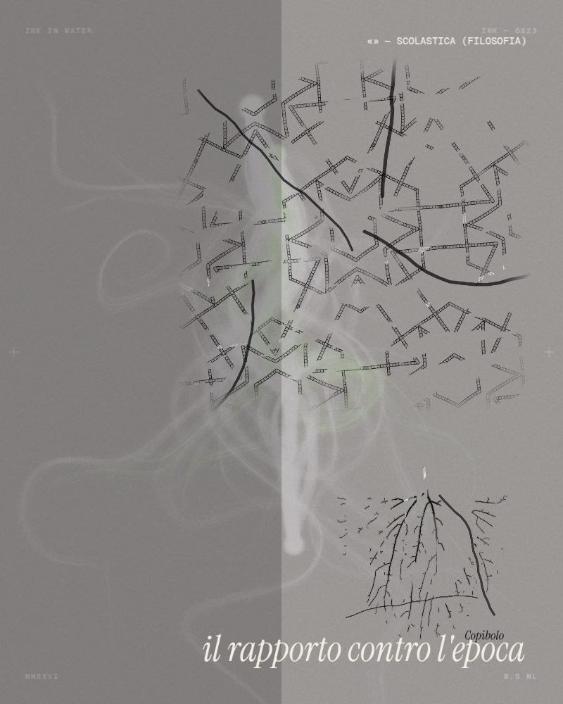
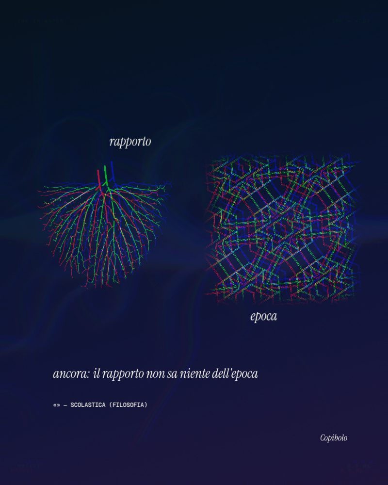

Giorno 1787

Il rapporto contro l'epoca
ho letto "Rapporto"; "rapporto" lo capisco solo per definizioni; nel suo significato c'è crocevia, crocicchio; ricerca "modello" (esplorare): Dove finisce modello?; enunciato: «il rapporto contro l'epoca» (ho letto in «Scolastica (filosofia)» che rapporto e epoca stanno insieme (contro))
Oggi: rapporto. Ho letto "Rapporto"; "rapporto" lo capisco solo per definizioni; nel suo significato c'è crocevia, crocicchio; ricerca "modello" (esplorare): Dove finisce modello?; enunciato: «il rapporto contro l'epoca» (ho letto in «Scolastica (filosofia)» che rapporto e epoca stanno insieme (contro)).
Da Wikipedia: «rapporto».
Ho scena:semina, scena:luce (2 volte), scena:colore, scena:stile, scena:motivi, redazione:togli, redazione:griglia, redazione:firma. Ho annullato 4 gesti dopo averli guardati.
Ha retto: Tiene l'intenzione: "rapporto" si vede (vuoto).
È caduto: La mano si ripete: scena:luce, scena:colore, scena:stile, scena:motivi, redazione:togli, redazione:griglia, redazione:firma ancora una volta.
come ne ho discusso con me stesso — la tengo
formale (pro, 1.50): Il baricentro sta su un terzo: la composizione respira. — regge
formale (pro, 1.25): Fuori centro quanto basta: c'è una forza che tira. — regge
occhio (pro, 1.50): Parla soprattutto per punti: una lingua sola, chiara. — regge
occhio (pro, 1.25): Il vuoto (41%) lavora quanto il pieno. — regge
memoria (contro, 0.10): La mano si ripete: scena:luce, scena:colore, scena:stile, scena:motivi, redazione:togli, redazione:griglia, redazione:firma ancora una volta. — cade
conservatore (pro, 1.74): Tiene i miei criteri (59%). — regge
intenzione (pro, 2.00): Tiene l'intenzione: "rapporto" si vede (vuoto). — regge
intenzione (pro, 0.75): Viene da: Rapporto. — regge
formale (pro, 1.25): C'è una struttura: una cosa comanda e attorno c'è spazio. — regge
pubblico (pro, 1.00): Si legge: si capisce cosa sto facendo. — regge

Ancora: il rapporto non sa niente dell'epoca
ho letto "Rapporto"; "rapporto" lo capisco solo per definizioni; nel suo significato c'è crocevia, crocicchio; ricerca "modello" (esplorare): Dove finisce modello?; enunciato: «il rapporto contro l'epoca» (ho letto in «Scolastica (filosofia)» che rapporto e epoca stanno insieme (contro)); serie: varia la tavola precedente; enunciato: «ancora: il rapporto non sa niente dell'epoca» (la stessa cosa, detta un'altra volta)
Oggi: rapporto. Ho letto "Rapporto"; "rapporto" lo capisco solo per definizioni; nel suo significato c'è crocevia, crocicchio; ricerca "modello" (esplorare): Dove finisce modello?; enunciato: «il rapporto contro l'epoca» (ho letto in «Scolastica (filosofia)» che rapporto e epoca stanno insieme (contro)); serie: varia la tavola precedente; enunciato: «ancora: il rapporto non sa niente dell'epoca» (la stessa cosa, detta un'altra volta).
Da Wikipedia: «rapporto».
Ho scena:semina, scena:colore, scena:stile, scena:motivi, scena:luce, sfasa, redazione:firma. Ho annullato 3 gesti dopo averli guardati.
Ha retto: C'è una struttura: una cosa comanda e attorno c'è spazio.
È caduto: Tradisce quello che credevo di cercare (17%).
come ne ho discusso con me stesso — la tengo
occhio (pro, 1.50): Parla soprattutto per punti: una lingua sola, chiara. — cade
occhio (pro, 1.25): Il vuoto (63%) lavora quanto il pieno. — cade
memoria (contro, 0.10): La mano si ripete: scena:colore, scena:stile, scena:motivi, scena:luce, redazione:firma ancora una volta. — cade
conservatore (contro, 1.83): Tradisce quello che credevo di cercare (17%). — cade
intenzione (pro, 0.75): Viene da: Rapporto. — regge
formale (pro, 1.25): C'è una struttura: una cosa comanda e attorno c'è spazio. — regge
pubblico (pro, 1.00): Si legge: si capisce cosa sto facendo. — regge